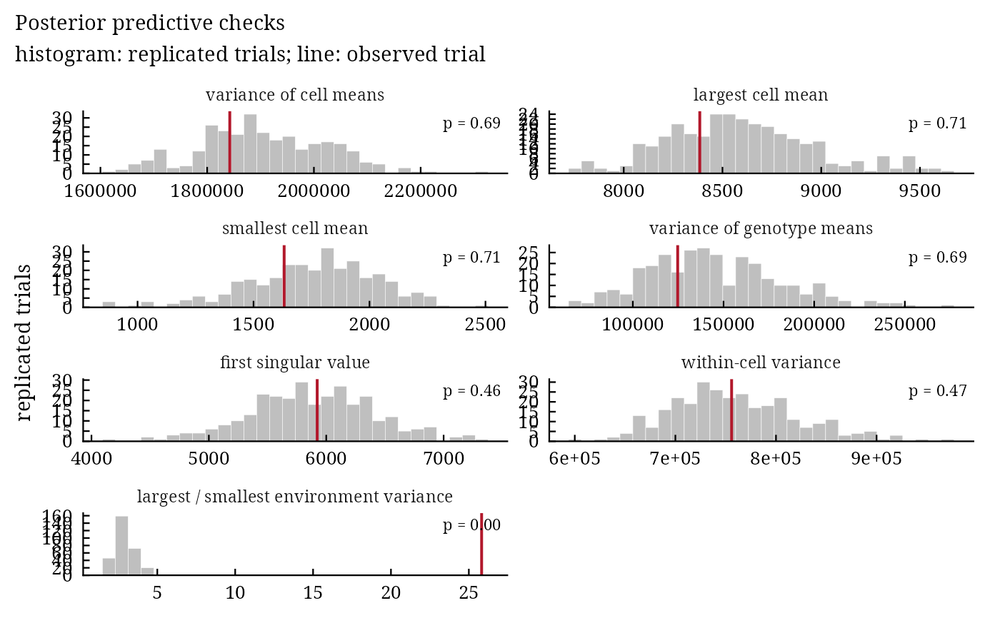

bam_ppc() compares statistics of the observed trial with their distribution in trials replicated from the
posterior predictive distribution (Gelman et al. 1996). A posterior predictive p-value near 0 or 1 shows a feature
of the data that the model does not reproduce, for instance unequal error variances or a missing interaction term.
Arguments
- fit
a result of
bayes_ammi()orbayes_stability().- .draws
number of posterior draws used (default 1000).
- .seed
seed for the replicated trials (the random number state of the session is restored).
Value
An object of class c("bam_ppc", "bam_result", "list") with checks (data.table:
statistic, observed, mean_rep, p_value) and replicated (data.table of
the replicated statistics).
Methods: print(), plot(), bam_interpret().
Details
For a subset of .draws posterior draws, a trial \(\mathbf{y}^{\mathrm{rep}}\) with the observed
plots is simulated from \(N(\eta_{ij}, \sigma^2_j)\), and for each statistic \(T\)
\(p = \Pr(T(\mathbf{y}^{\mathrm{rep}}) \ge T(\mathbf{y}) \mid \mathbf{y})\). The
statistics: variance of the cell means, largest and smallest cell mean, variance of the genotype means, first
singular value of the interaction effects of the cell means, pooled within-cell variance, and the ratio of the
largest to the smallest within-environment variance.
References
Gelman, A., Meng, X.-L. and Stern, H. (1996). Posterior predictive assessment of model fitness via realized discrepancies. Statistica Sinica, 6(4), 733–807.
See also
Other model choice:
bam_compare()
Author
Muhammad Yaseen (myaseen208@gmail.com)
Examples
data(Maiz)
fit <-
bayes_ammi(
.data = Maiz
, .y = y
, .gen = entry
, .env = site
, .rep = rep
, .nIter = 600
, .k = 2
, .burnin = 100
, .thin = 1
, .chains = 1
, .priors = bam_priors(
mu_mean = 0
, mu_var = 1e+8
, tau_mean = 0
, tau_var = 1e+8
, delta_mean = 0
, delta_var = 1e+8
, lambda_mean = 0
, lambda_var = 1e+8
, nu = 1
, s2 = NULL
)
, .level = 0.95
, .seed = 1
, .align = TRUE
, .model = "AMMI"
, .het = FALSE
, .waic = TRUE
)
pc <-
bam_ppc(
fit = fit
, .draws = 300
, .seed = 1
)
pc$checks
#> statistic observed mean_rep p_value
#> <char> <num> <num> <num>
#> 1: variance of cell means 1.842357e+06 1.904436e+06 0.6866667
#> 2: largest cell mean 8.385050e+03 8.597309e+03 0.7066667
#> 3: smallest cell mean 1.632000e+03 1.754072e+03 0.7066667
#> 4: variance of genotype means 1.247327e+05 1.448057e+05 0.6866667
#> 5: first singular value 5.922891e+03 5.878150e+03 0.4566667
#> 6: within-cell variance 7.558838e+05 7.594279e+05 0.4666667
#> 7: largest / smallest environment variance 2.582038e+01 2.943674e+00 0.0000000
plot(x = pc)
